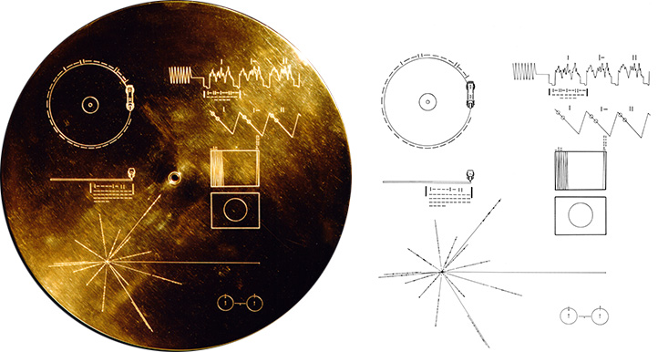
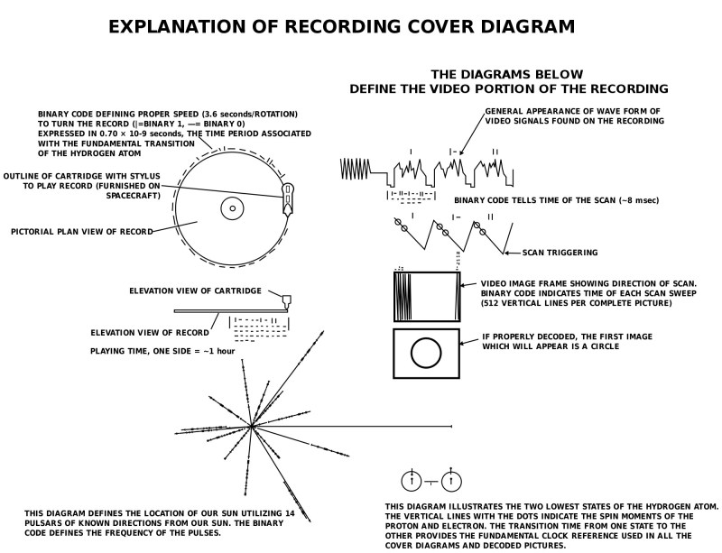
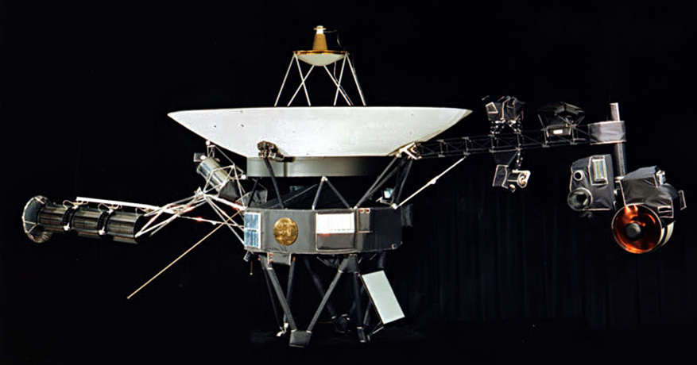

Launched in 1977, both Voyager spacecraft carry a unique 'time capsule' along with them into interstellar space.
In the upper left-hand corner is an easily recognized drawing of the phonograph record and the stylus carried with it. The stylus is in the correct position to play the record from the beginning. Written around it in binary arithmetic is the correct time of one rotation of the record, 3.6 seconds, expressed in time units of 0.70 billionths of a second, the time period associated with a fundamental transition of the hydrogen atom. The drawing indicates that the record should be played from the outside in. Below this drawing is a side view of the record and stylus, with a binary number giving the time to play one side of the record—about an hour.
The information in the upper right-hand portion of the cover is designed to show how pictures are to be constructed from the recorded signals. The top drawing shows the typical signal that occurs at the start of a picture. The picture is made from this signal, which traces the picture as a series of vertical lines, similar to ordinary television (in which the picture is a series of horizontal lines). Picture lines 1, 2, and 3 are noted in binary numbers, and the duration of one of the "picture lines," about 8 milliseconds, is noted. The drawing immediately below shows how these lines are to be drawn vertically, with staggered "interlace" to give the correct picture rendition. Immediately below this is a drawing of an entire picture raster, showing that there are 512 vertical lines in a complete picture. Immediately below this is a replica of the first picture on the record to permit the recipients to verify that they are decoding the signals correctly. A circle was used in this picture to ensure that the recipients use the correct ratio of horizontal to vertical height in picture reconstruction.
The drawing in the lower left-hand corner of the cover is the pulsar map previously sent as part of the plaques on Pioneers 10 and 11. It shows the location of the solar system with respect to 14 pulsars, whose precise periods are given. The drawing containing two circles in the lower right-hand corner is a drawing of the hydrogen atom in its two lowest states, with a connecting line and digit 1 to indicate that the time interval associated with the transition from one state to the other is to be used as the fundamental time scale, both for the time given on the cover and in the decoded pictures.
Electroplated onto the record's cover is an ultra-pure source of uranium-238 with a radioactivity of about 0.00026 microcuries. The steady decay of the uranium source into its daughter isotopes makes it a useful indicator of radioactive decay. Half of the uranium-238 will decay in 4.51 billion years. Thus, by examining this two-centimeter diameter circle of uranium and measuring the amount of daughter elements to the remaining uranium-238, an extraterrestrial recipient of the Voyager spacecraft could calculate the time elapsed since a spot of uranium was placed aboard the spacecraft. This should be a check on the epoch of launch, which is also described by the pulsar map on the record cover.
